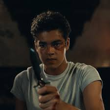

Destined to Meet
On her adventure she meets Will, a young boy from England. Born from a mother with metal
issues and a father who left for an expedition to the Arctic but never returned. Will is the
final bearer of the subtle knife. Will's father left when he was a baby on an expedition to
the Arctic and never returned.

Read More...
What Is Dust?
Dust was an elementary particle. It had different names in the different worlds of the
multiverse: Dust or Rusakov Particles in Lyra's world, Shadows, Shadow-particles or dark
matter in Will's world, and sraf in the mulefa world. Angels were beings entirely composed
of Dust. The Authority was the first angel to condense this way, and claimed to those that
followed that he created them. Spectres consumed the consciousness of a living person,
destroying their Dust and the capacity to produce it.
Read More...
Sequels
In addition to the trilogy there are also two short novels: Lyra's Oxford and Once Upon a
Time in the North. Lyra's Oxford is a sequel to The Amber Spyglass, and tells the story of
a witch who seeks revenge for her son's death in the war against the Authority. She draws
Lyra into a trap, but birds mysteriously rescue her and Pan and she makes the acquaintance
of an alchemist who was formerly the witch's lover. Once Upon a Time in the North is a prequel
to His Dark Materials and focuses on the 24-year-old Texan aeronaut Lee Scoresby. After winning
his hot-air balloon, Scoresby heads to the North, landing on the Arctic island Novy Odense,
where he finds himself pulled into a dangerous conflict between the oil-tycoon Larsen Manganese,
the corrupt mayoral candidate Ivan Poliakov, and his longtime enemy from the Dakota Country,
Pierre McConville. The story tells of Lee and Iorek's first meeting and of how they overcame
these enemies.
Read More...